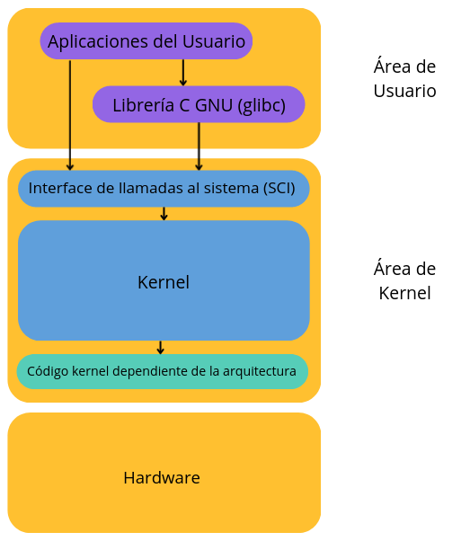
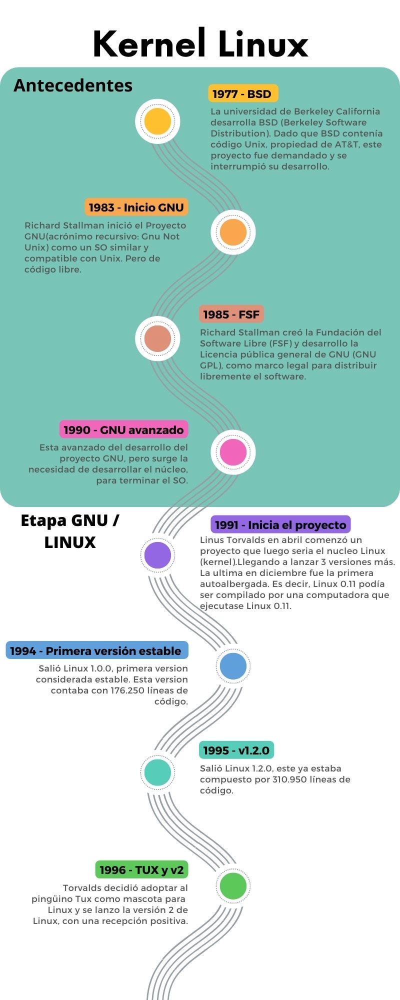
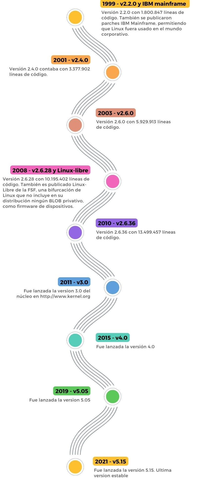

En grupo responder las siguientes preguntas:
Los requisitos mínimos de hardware para una version mínima del SO:
Para versiones de escritorio de distribuciones de LINUX populares:
Requisitos mínimos para sistemas con interfaz gráfica:
Requisitos recomendados para sistemas con interfaz gráfica:
Requisitos mínimos para sistemas sin interfaz gráfica:
Requisitos mínimos para sistemas sin interfaz gráfica:
Estas versiones pueden ser instaladas con un mínimo de 20Mb de RAM en arquitecturas de procesador s390 y 60Mb en arquitecturas de amd64. A la hora de calcular el espacio necesario para el disco duro, tenemos que ir teniendo en cuenta que partes del sistema vamos a utilizar y las aplicaciones que necesitamos instalar.
Requisitos mínimos de hardware:
Datos obtenidos de: []
Requisitos recomendados de hardware:
Requisitos mínimos de hardware:
Datos obtenidos de: Fedora Project - Hardware Overview
El kernel de Linux es el elemento principal de los sistemas operativos GNU/Linux, y es la interfaz o conexión fundamental entre el hardware de una computadora y sus procesos. Los comunica entre sí y gestiona los recursos de la manera más eficiente posible.
Gestión de la memoria: supervisa cuánta memoria se utiliza para almacenar qué tipo de elementos, así como el lugar en que los guarda.
Gestión de los procesos: determina qué procesos pueden usar la unidad central de procesamiento (CPU), cuándo y durante cuánto tiempo.
Controladores de dispositivos: actúa como mediador o intérprete entre el hardware y los procesos.
Seguridad y llamadas al sistema: recibe solicitudes de servicio por parte de los procesos.
Para darle un contexto al kernel, imagínese que el equipo Linux tiene tres capas:
El hardware: Se trata del equipo físico, el cimiento o la base del sistema, que esá compuesto de la memoria (RAM) y el procesador o la unidad central de procesamiento (CPU), además de los dispositivos de entrada y salida (E/S), el almacenamiento, la conexión de red y los gráficos. La CPU realiza los cálculos y también accede a la memoria y la modifica.
El kernel de Linux: el corazón del SO. Se encuentra justo en el medio y se trata del software que reside en la memoria e indica qué debe hacer la CPU.
Procesos del usuario: son los programas en funcionamiento que gestiona el kernel y, en conjunto, conforman el espacio del usuario. También se les llama procesos simplemente. El kernel también permite que los procesos y los servidores se comuniquen entre sí, lo cual se conoce como comunicación entre procesos (IPC).

Información obtenida de: RedHat - ¿Qué es el kernel de Linux?
 